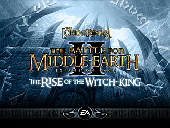

Battle for Middle-earth I
Rebuilding the first game's C++ source, function by function, against the retail executable.
BFME I repository ↗THE BATTLE FOR MIDDLE-EARTH LIVES ON
Rebuilding the games, together.
OpenBFME is a community effort to reconstruct the original Battle for Middle-earth games from source and recreate The Rise of the Witch-king in Godot. The work is public, ongoing, and unfinished.
BFME I and BFME II are C++ reconstruction projects. The Godot recreation of Rise of the Witch-king has early alpha builds for testers with the original game files.
Start with the projects, read the code progress reports, or join the OpenBFME Discord to meet the community.

An early recreation of the expansion. Alpha builds are available for testers who have compatible original game files.
Rebuilding the first game's C++ source, function by function, against the retail executable.
BFME I repository ↗Reconstructing the sequel's code and tracking what has been recovered.
BFME II repository ↗Share of each game's code in C++, not an estimate of overall game completion. Snapshot: .
| Game | C++ code | Source report |
|---|---|---|
| BFME I | 69.85% | View report ↗ |
| BFME II | 79.21% | View report ↗ |
TRY WHAT EXISTS TODAY
Test the early Godot recreation of Rise of the Witch-king. It needs your own compatible original game files and is not a finished replacement.
See available releases ↗BUILD IT WITH US
Discuss the work, test builds, or help reconstruct the code. Start with the project repositories or meet the community on Discord.
Join the OpenBFME Discord ↗GOOD TO KNOW
They are ongoing reconstruction projects, not finished game downloads. Follow their repositories for the current state of the code.
Yes. The alpha is for testers who have the required original BFME II and Rise of the Witch-king files. See the release instructions before downloading.
Choose a project repository above or join the OpenBFME Discord to find a place to contribute.